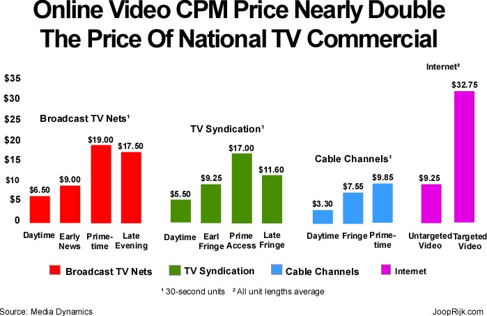

[Intro]
ad impact = (# voters reached) × (% minds changed)
Estimating the number of primary voters reached by each dollar spent on advertising is actually pretty straightforward. All we need is to figure out the CPM (cost per thousand views) for TV commercials and multiply by what percentage of those viewers are Democratic primary voters:
(# voters reached /$) = (1000 /CPM) × (% Democratic primary turnout)
We can use the findings of Media Dynamics.

blah blah blah
(# voters reached /$) ≈ (1000 /10) × 8.6% × 1.5 multiplier ≈ 13 voters /$
blah blah blah
% minds changed = (50 % medium-information voters) × (10 % avg change) × ½ = 2.5 %
Putting it all together, we can finally get a (hugely simplified) approximation of the impact of each dollar spent on Bernie Sanders campaign ads:
(13 voters reached /$) * (0.025 extra votes /voters reached) = 0.325 votes /$
or roughly 1 extra vote per $3 spent on advertising.
blah blah blah
blah blah blah donate